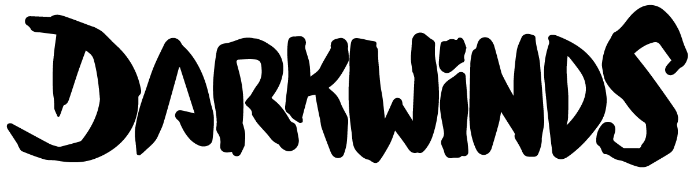

Introducing
Darkwinds is an Ethereum trading card game, that uses the blockchain for card distribution and storage.
This means all cards issued in the game are a cryptocollectible (ERC721)
Darkwinds draws inspiration from the myths and realities that pirates faced on their journeys and taking it to the realms of fantasy, where numerous deities, human and non-human pirates, giant creatures and powerful artifacts and spells converge.
In Darkwinds you can use your trading cards to fight other pirates in naval warfare. While some players might want to buy and trade cards to complete their collection, others will build a competitive playing deck in order to become the best player!

Winston Winddodger
Human anatomy is his passion, and joins the expedition with the intent of studying the effects of sailing in the human body. Also, having a physician on board might be of help.

Princess Eleanor
One of the most feared captains of the Seven Seas, she is the heir of the great realm of Itova. After his father's dissapearance, she sails to capture his uncle, Dark Septus the Ruthless.

Manuk, Smile of Steel
A minion of Dark Septus, he is responsible of guarding the Doors to the Forgotten Seas. His sadism made him a legend amongst merchant sailors.
In this unruly landscape you must take on the role of Captain, gathering a crew that can face rival Captains that prowl around the Seven Seas, looking to become the most feared pirate in the world.
Sailing inspires the main force in the game: Winds. There are four essential winds, North, South, East and West.
North Wind
Embodies the spirit of life and creation, the vital force that moves all creatures and pirates to fight for survival and the perpetuation of their own kin.
South Wind
Incarnates the spirit of death and destruction, the essence that drives the inhabitants of this world to long for death and unravel chaos.
East Wind
Epitomizes the spirit of nature and wilderness, contained in the creatures and living beings that feel part of the living world.
West Wind
Manifests the spirit of magic and the unearthly, enclosed in those who defy the limits of nature and take course into the depths of the unknown.
Not all cards are created equal. Half of the 100-card set appear more frequently, which makes the latter half rarer. A rarer card will most of the times be more powerful than its more frequent counterpart, and the characters depicted have a more important role in the game's lore.

Dumbol, the dumb
Intelligence is not part of every pirate's arsenal.

Kraken
A creature that believes that mankind does not belong on the seas.
Building a Deck


Anatomy of a Card
- Requirements
Some cards can only be summoned if specific conditions are met in the board. - Defense
The amount of damage that will take this card to be killed.
Cost
In order to play a card, you must pay its cost.- Abilities
Some cards have special abilities like Raid (can be used before all other cards) - Attack
The amount of damage this card can inflict on others when used for assault.
The Game
The game is played between two Captains that control a 10-card deck each. Captains take turns to draw a card from their deck, play cards (e.g. hiring a Buccaneer or buying a Spell) and then attack their rival or their rival's cards.
To hire or buy a card, you need to have sufficient money. You supply of money (called "bounty") increases each turn until it tops out at 5, except when the first turn of the game is played.
Card Types and Abilities

Blockade
When a buccaneer or creature has the Blockade ability, you cannot attack your rival directly. This means that in order to attack a rival that has a card with taunt on his board, you must kill this card first.

Raid
When a buccaneer or creature has the Raid ability, that card can attack the same turn it was played.


Assault
When a card has the assault ability, it can deal damage to any enemy card or the rival captain, bypassing any active taunt ability.
If the ability has the 'target' keyword, you will need to select a valid target for the effect to occur. If not, the effect happens automatically.


Cure
When a card has the Cure ability, it can cure a friendly card or yourself.
If the ability has the 'target' keyword, you will need to select a valid target for the effect to occur. If not, the effect happens automatically.

Gather
When a buccaneer or creature has the Gather ability, it summons the card stated on the ability directly into play like it was played from your hand.

Requires
When a buccaneer or creature has the Requires ability, you cannot play it unless you comply with the abilities requirement.
Frequently Asked Questions
What is a cryptocollectible?
All the official Darkwinds cards are crypto collectibles: They are created as a special asset in the Ethereum Blockchain. This means it's completely yours to use, trade or sell anywhere.
How many types of cards exist?
There are 100 different cards that can be obtained at random through the "First Edition" smart contract.
Very soon, we will release expansions with new contracts with card model #101 and up.
You can see all the 100 initial cards here.
How are cards generated at random?
For every new card in circulation, a Smart Contract transaction will generate one from the 100 models at random.
The contract is coded in a way that makes some cards more common than others.
If you are curious, you can look at the source code in our GitHub.
What are the system requirements for Darkwinds?
You can play on Windows, MacOS and Linux with your browser and the Metamask extension.
MetaMask allows you to run websites with Ethereum in your browser. Install it ONLY through its official website here.
How are my Darkwinds cards secured?
The Metamask extension generates a private key locally on your computer and it's stored secret with your Password. This means you are the only one with access to them. Users are responsible for backup of their wallets.
Thankfully, Metamask wallets are easy to back-up with a mnemonic recovery phase. Remember to save your mnemonic somewhere safe. We are not responsible for losts, neither MetaMask.
How do I get ETH?
In case you don’t have Ether (ETH), you will need to acquire them from a local exchange. Popular ones are Coinbase (United States), Poloniex (Europe) and Buda.com (South America)
Where can I check my ETH balance?
If you already transferred ETH to you MetaMask wallet, check your balance. MetaMask will appear in your browser. If you have at least 0.01 Ethereum you are ready.

How can I know that I am in the right ETH network?
After the installation, make sure you are in the Main Ethereum Network.
Can I have a nickname?
In your 1st time visiting Play now, the page will ask you for a nickname only once. This name will be visible to your opponents. If you already did all of the previous steps and you want to set you nickname, visit this link.
How can I buy cards?
Visit Get cards and purchase one of the three products. If you click one of the three “buy” buttons, a MetaMask window will open, showing the information of the transaction that you are about to make.
It will only be done if you press SUBMIT. If you don’t want to buy press REJECT.
You can’t decide which cards buy, they will reveal after your purchase in your Card book link.

Where is my deck?
Check your purchased cards in the Card book link in the main navigation. Here are all of your cards in your book and in your deck.
You must build a Deck to battle an opponent. Visit your Card book, select a card and drag it to the center of the page. You can add up to 10 cards to your deck. Now you’re ready to fight to control the Darkwinds.

What are the differences between Tutorial, Quick match & Ranked?
There are three match categories in Play Now
In Tutorial you’ll learn to play against a bot. If you win, you won’t earn points for the ranking.
In Quick Match you’ll fight against another pirate. This is really good to start creating your strategies.
In Ranked you fight against a pirate, and the winner will appear in the ranking. Only the bests are in the higher places!
How many cards should I own to be able to play?
You need at least 10 cards in your deck. We suggest you to have more cards, so you can build up your strategy.
How can I buy specific cards?
In addition to buying cards from the game store in Booster packs, you can acquire a specific card through any Cryptocollectible marketplace, such as OpenSea
Can I trade my cards?
If you have a friend that plays Darkwinds and you want to make him/her a gift, you can ask for their ETH address and transfer a card.
You can also use Darkwinds cards in collectible exchanges like OpenSea for selling and buying with other holders.